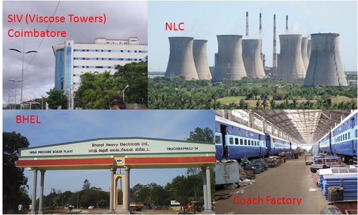

CM of Madras State
On 13 April 1954, Kamaraj became the Chief Minister of Madras Province. To everyone's surprise, Kamaraj nominated C. Subramaniam , who had contested his leadership, to the newly formed cabinet. As Chief Minister, Kamaraj removed the family vocation based Modified Scheme of Elementary education 1953 introduced by Rajaji. He reopened 6000 schools closed in the previous government by C. Rajagopalachari citing financial reasons and reopened 12,000 more schools. The State made immense strides in education and trade. New schools were opened, so that poor rural students had to walk no more than three kilometres to their nearest school.
Better facilities were added to existing ones. No village remained without a primary school and no panchayat without a high school. Kamaraj strove to eradicate illiteracy by introducing free and compulsory education up to the eleventh standard.He introduced the Midday Meal Scheme to provide at least one meal per day to the lakhs of poor school children. He introduced free school uniforms to weed out caste, creed and class distinctions among young minds.
During the colonial era , the local education rate was at 7%; after Kamaraj's reforms, it reached 37%. Apart from increasing the number of schools, steps were taken to improve standards of education. To improve standards, the number of working days was increased from 180 to 200; unnecessary holidays were reduced; and syllabi were prepared to give opportunity to various abilities. Kamaraj and Bishnuram Medhi (Governor) took efforts to establish IIT Madras in 1959.
Major irrigation schemes were planned in Kamaraj's period. Dams and irrigation canals were built across higher Bhavani, Mani Muthar, Aarani, Vaigai, Amaravathi, Sathanur, Krishnagiri, Pullambadi, Parambikulam and Neyyaru among others. The Lower Bhavani Dam in Erode district brought 207,000 acres (840 km2) of land under cultivation. 45,000 acres (180 km2) of land benefited from canals constructed from the Mettur Dam . The Vaigai and Sathanur systems facilitated cultivation across thousands of acres of lands in Madurai and North Arcot districts respectively. Rs 30 crores were planned to be spent for Parambikulam River scheme, and 150 lakhs of acres of lands were brought under cultivation; one third of this (i.e. 56 lakhs of acres of land) received a permanent irrigation facility. In 1957–61 1,628 tanks were de-silted under the Small Irrigation Scheme, and 2,000 wells were dug with outlets. Long-term loans with 25% subsidy were given to farmers. In addition farmers who had dry lands were given oil engines and electric pump sets on an instalment basis.
Industries with huge investments in crores of Rupees were started in his period: Neyveli Lignite Corporation, BHEL at Trichy, Manali Refinery , Hindustan raw photo film factory at Ooty, surgical instruments factory at Chennai, and a railway coach factory at Chennai were established. Industries such as paper, sugar, chemicals and cement took off during the period.
Kamaraj plan
Kamaraj remained Chief Minister for three consecutive terms, winning elections in 1957 and 1962. Kamaraj noticed that the Congress party was slowly losing its vigour.On Gandhi Jayanti day 2 October 1963, he resigned from the post of the Chief Minister. He proposed that all senior Congress leaders should resign from their posts and devote all their energy to the re-vitalization of the Congress.
In 1963 he suggested to Nehru that senior Congress leaders should leave ministerial posts to take up organisational work. This suggestion came to be known as the Kamaraj Plan, which was designed primarily to dispel from the minds of Congressmen the lure of power, creating in its place a dedicated attachment to the objectives and policies of the organisation. Six Union Ministers and six Chief Ministers including Lal Bahadur Shastri, Jagjivan Ram, Morarji Desai, Biju Patnaik and S.K. Patil followed suit and resigned from their posts.
Impressed by Kamaraj's achievements and acumen, Prime Minister Jawaharlal Nehru felt that his services were needed more at the national level. In a swift move he brought Kamaraj to Delhi as the President of the Indian National Congress. Nehru realised that in addition to wide learning and vision, Kamaraj possessed enormous common sense and pragmatism. Kamaraj was elected the President of Indian National Congress on 9 October 1963.
National Politics
After Nehru's death in 1964, Kamaraj successfully navigated the party through turbulent times. As the president of INC, he refused to become the next Prime Minister himself and was instrumental in bringing to power two Prime Ministers, Lal Bahadur Shastri in 1964 and Nehru's daughter Indira Gandhi 1966.
For this role, he was widely acclaimed as the "kingmaker" during the 1960s.
When the Congress split in 1969, Kamaraj became the leader of the Indian National Congress (Organisation) (INC(O)) in Tamil Nadu. The party fared poorly in the 1971 elections amid allegations of fraud by the opposition parties. He remained the leader of INC(O) until his death in 1975.